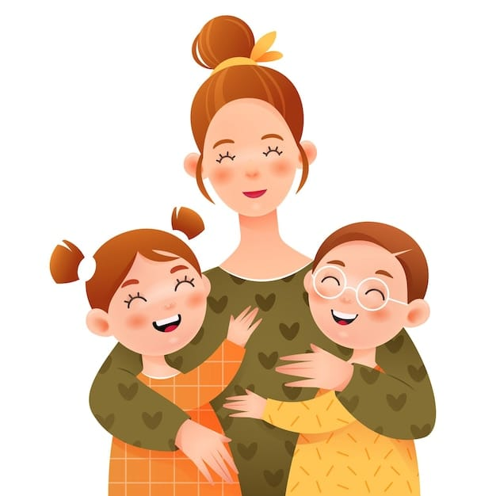
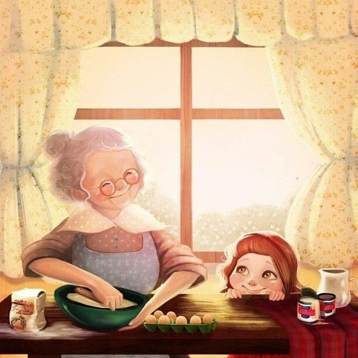
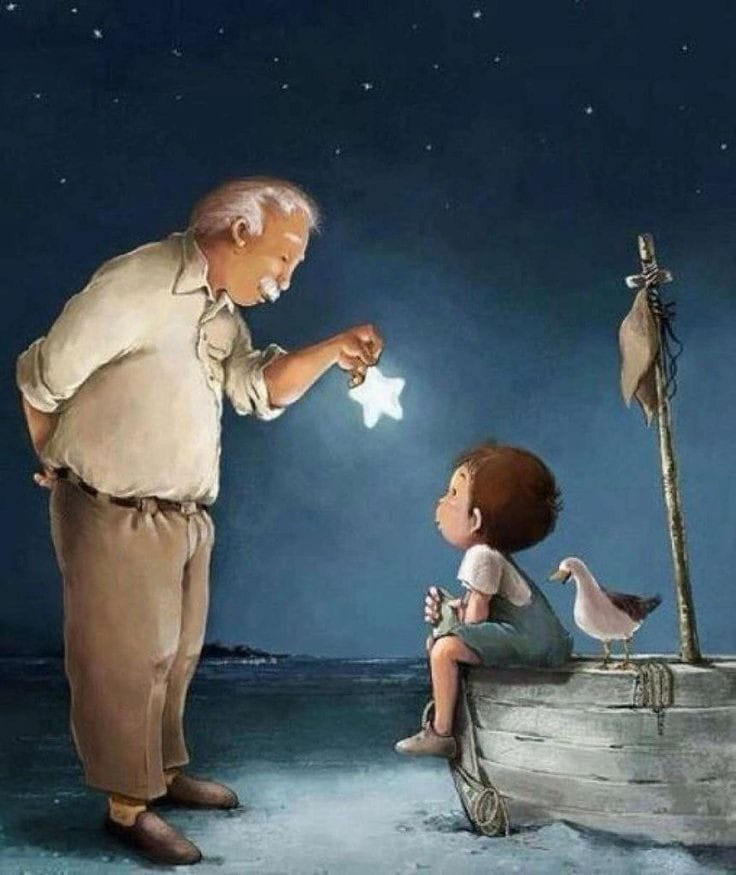
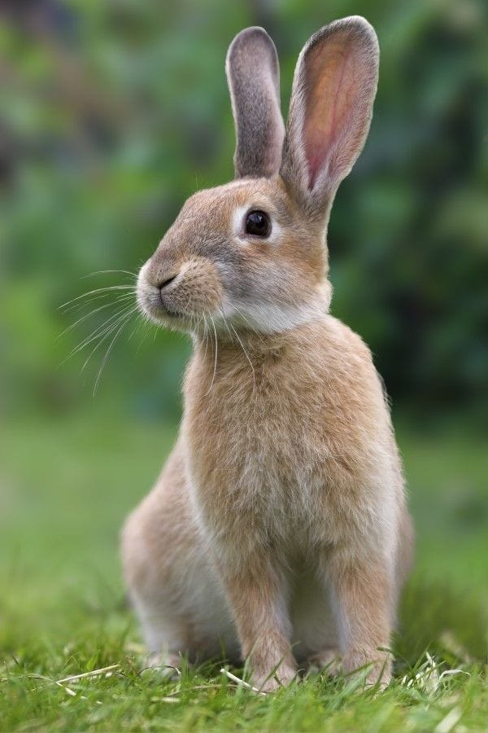
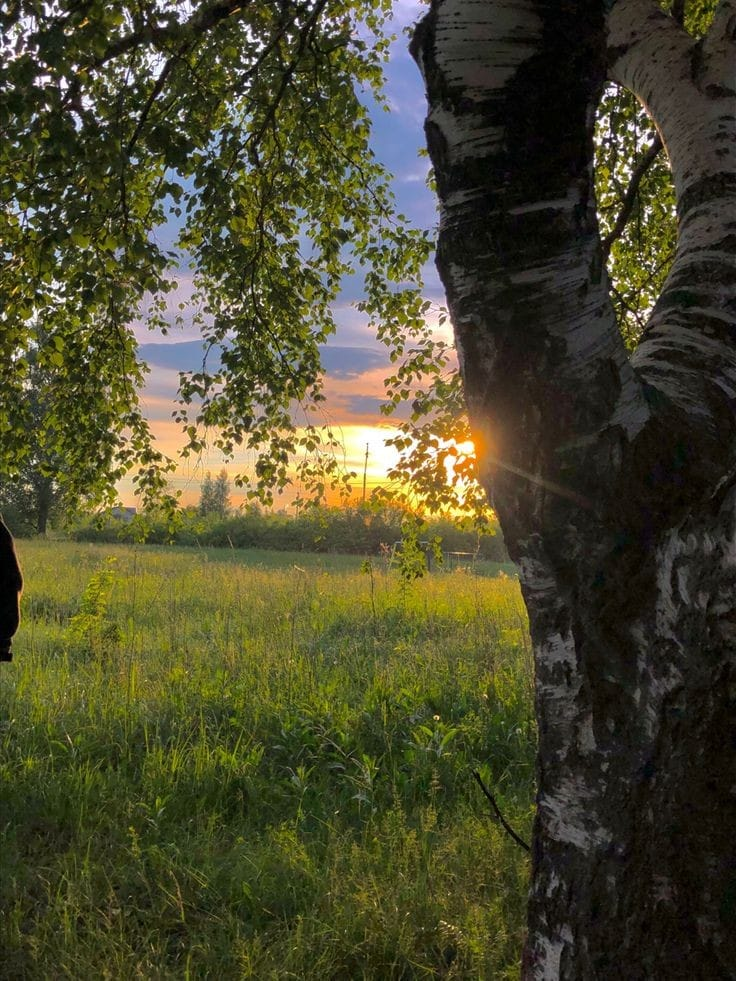
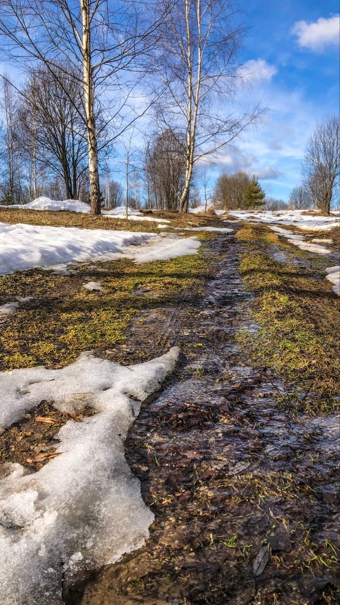
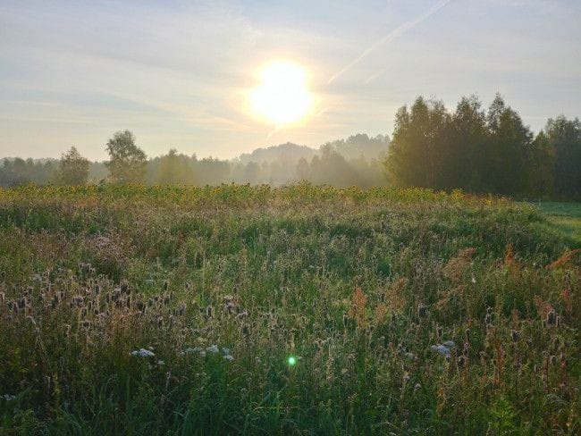

Сахатико: я предлагаю начать с изучения базовых слов! Учитель говорил, что эти слова чаще всего могут быть использованы во время разговора. Ой, совсем забыл! Для начала, если ты не знаешь произнашение якутских звуков, нужно ознакомиться с якутскими звуками. Ознакомиться с ними можно перейдя в каталог Фонетика и выбрав тему Алфавит. Начнем наше изучение!
Дьиэ кэргэн – семья
Мама – ийэ
Папа – аҕаБабушка – эбээ, прабабушка – хос эбээ
Дедушка – эһээ, прадедушка – хос эһээ
Старшая сестра – эдьиий

Младшая сестра – балты

Старший брат – убаай

Младший брат – быраат

Тетя – саҥас
Дядя (со стороны мамы) – таай и (со стороны папы) – абаҕа
Дочь – кыыс оҕо

Сын – уол оҕо
Харамайдар – животныеКот, кошка – куоска

Собака – ыт

Мышь – кутуйах

Корова – ынах

Бык – оҕус

Лошадь – ат

Курица – куурусса

Заяц – куобах
Сова – мэкчиргэ

Гусь – хаас

Рыба – балык

Белка – тииҥ

Олень – таба

Цифры – цыыпыралар
1 биир 11
2 икки 12
3 үс 13
4 14
5 15
6 16
7 17
8 18
9 19
10 20
Месяцы – ыйдарЯнварь – тохсунньу
Февраль – олунньу
Март – кулун тутар
Апрель – муус устар
Май – ыам ыйа
Июнь – бэс ыйа
Июль – от ыйа
Август – атырдьах ыйа
Сентябрь – балаҕан ыйа
Октябрь – алтынньы
Ноябрь – сэтинньи
Декабрь – ахсынньы
Цвета – өҥнөрКрасный – кыһыл
Оранжевый – сырдык саарыл
Желтый – араҥас
Зеленый – от күөх
Голубой, синий – халлаан күөх
Фиолетовый – хара саарыл
Розовый – кубархай кыһыл
Белый – маҥан
Черный – хара
Серый - бороҥ
Коричневый – күрэҥ
Погода – күн-дьыл туругаЛето – сайын
Осень - күһүн
Зима – кыһын
Весна – саас
Холодная – тымныы
Теплая – сылаас
Жаркая – итии
Ясная – былыта суох
Дождливая – ардахтаах
Короткая – кылгас
Длинная – уһун
Ветреная – тыаллаах
Безветреная – тыала суох
Облачная – былыттаах
Радуга- кустук

Гроза - этиҥ
Базовые фразы
• Способы приветсвия
Привет – дорообо
Доброе утро – үтүө сарсыарда
Добрый день – үтүө күн
• Способы прощания
Добрый вечер – үтүө киэһэ
До свидания – көрсүөххэ диэри
• Слова вежливости
Спасибо – махтал
Большое спасибо – улахан махтал
Простите – бырастыы гын
• Универсальные вопросы
Что это – бу тугуй
Как это называется – бу туох диэн ааттааҕый
Не могли бы мне помочь – миэхэ сатаан көмөлөһүөн дуо
• Представление
Меня зовут ... – мин аатым ... Пример: Мин аатым Сахатико
Мне ... лет – мин ... саастаахпын Пример: Мин биэс саастаахпын
Мой любимый цвет – голубой – мин сөбүлүүр тылым халлаан күөх
Моего папу зовут ... – мин аҕам ... диэн ааттаах
Ему ... лет – кини ... саастаах